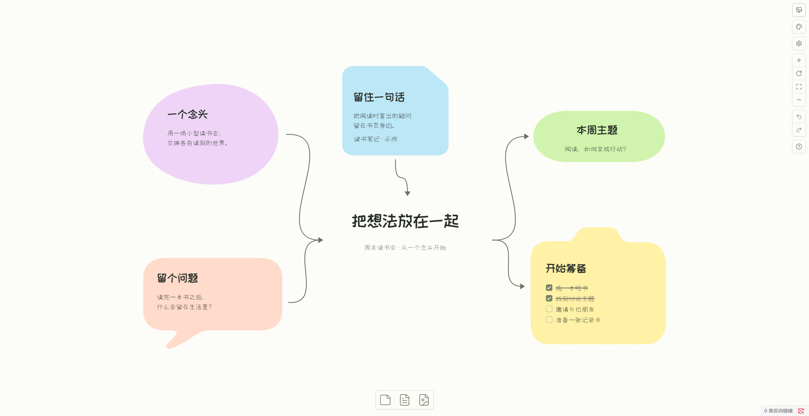
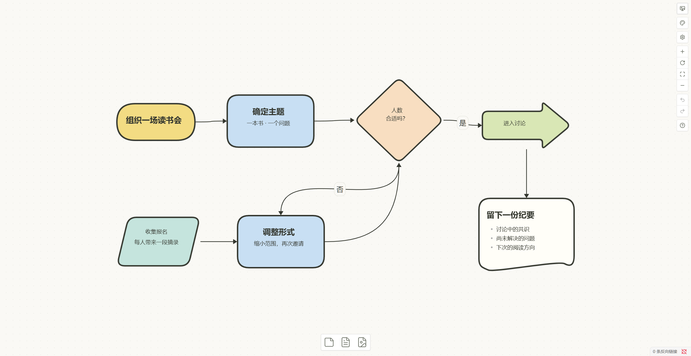
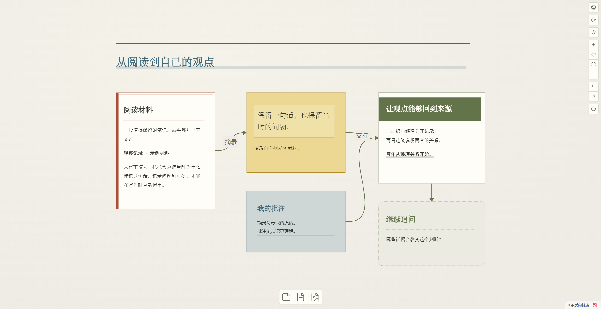
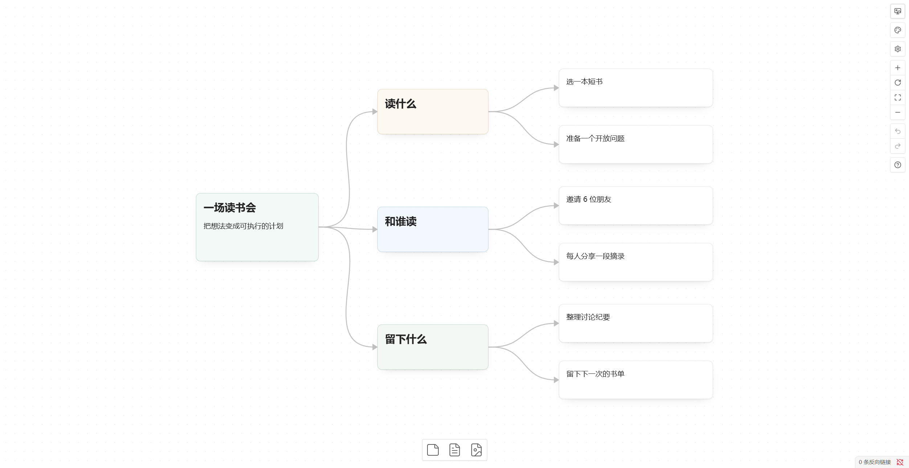
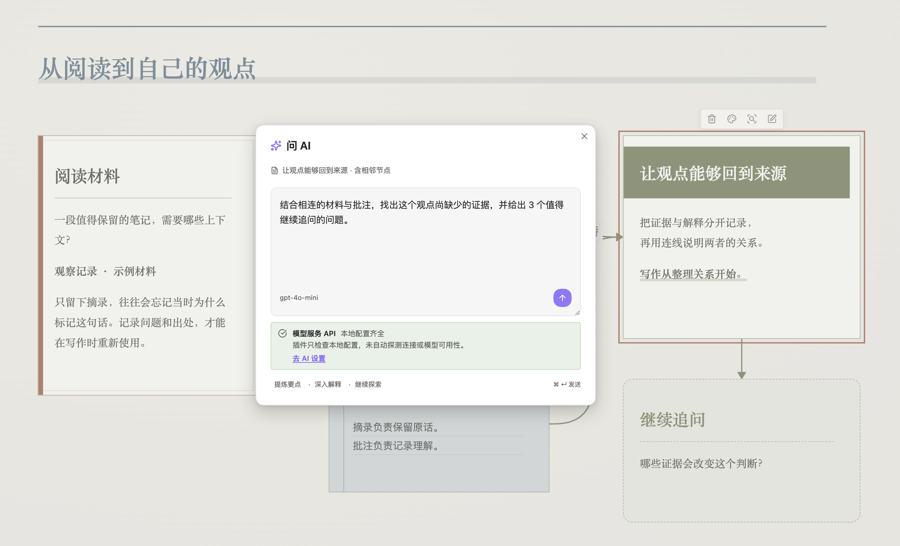

An Obsidian Canvas plugin
A place to think in shapes.
Better Canvas adds themes, card-first map making, and reading tools to Obsidian Canvas. Arrange notes spatially, keep every source next to the thought it inspired, and call AI only when you choose to.
Desktop only. Requires Obsidian 1.14.4 or newer.

Better Canvas works on top of Obsidian's own .canvas files. The editing and theme tools need no account; AI is optional.
- Host
- Obsidian 1.14.4 or newer
- Platform
- Desktop only
- License
- GPL-3.0-or-later
- Latest verified release
- 0.1.1
Canvas themes
Six ways to set the scene.
Choose a theme for each canvas from the right-hand rail, then use the node style panel to give individual cards a role. Content, positions, and connections stay where they are. The theme is saved with the canvas.
Themes change the look, not the file format. Obsidian still opens the same canvas.


The six themes, and what each is good at:
- DefaultObsidian's own canvas, without extra decoration.
- Soft notesCurved pastel cards for loose, early thinking.
- Paper studyWarm paper, serif headings, and print-like presets.
- Gummy whiteboardRounded shapes and strong outlines for process maps.
- Sketch boardDotted paper, hand-drawn edges, and margin-note presets.
- Collage journalTape, ruled paper, torn edges, and photo frames.
Mind maps
Follow the branch without leaving the keys.
Cards are the unit of thought. Select one and press a key to keep going. When a branch gets crowded, arrange the selected tree left, right, up, or down. A Markdown note can also seed the map by turning its H1 headings into connected cards.

The keys that keep a thought moving:
- Tab
- Create a child card, when no text is being edited.
- Enter
- Create a sibling card, when no text is being edited.
- Shift + Tab
- Create a child card while editing text.
- Shift + Enter
- Create a sibling card while editing text.
- Alt + ↑ ↓ ← →
- Move the selection to an adjacent card.
- Ctrl/Cmd + Shift + arrow
- Create a child card in that direction.
Each shortcut group can be turned off in settings if it collides with another plugin or your own hotkeys.
Node styling
Cards that say what they are.
Start from a preset, then adjust color, shape, border, and text alignment. Select several cards to apply one style across a group without replacing the words. Connectors get their own controls: color, line style, arrowhead, direction, and direct, square, or A-star routing.
Preset roles, by theme
- Default
- Obsidian's native cards. CSS snippets can add reusable node and edge presets.
- Soft notes
- Idea, excerpt, concept, action, question, and free text.
- Paper study
- Source material, key quote, reading note, core claim, open question, and section heading.
- Gummy whiteboard
- Start or topic, step or task, decision, flow or next stage, input or output, and document.
- Sketch board
- Chapter, core concept, action step, decision, margin note, and risk.
- Collage journal
- Tape note, ruled paper, torn paper, photo frame, and label.
Preset availability differs by theme. Groups keep their own styling, and presets never replace a card's text.
PDF annotations
Keep the page beside the passage.
Pin a PDF page into a canvas, select text to make a linked excerpt, and draw or highlight on the page. Annotations save with the canvas, so the PDF itself stays as it is.
Reading is easier to keep when the source, the quotation, and your own response occupy the same space. Better Canvas keeps all three in the canvas file, including pen marks, highlights, and typed notes.
With a vision-capable model configured, you can OCR a single page or a range and save each page's result as its own linked card.
- Pin Put a page from a PDF in your vault onto the canvas.
- Mark Use the pen, highlighter, eraser, and undo tools, or add a typed note.
- Carry it forward Make a linked excerpt card, or run OCR in batches of up to 20 pages.
Not a replacement for a full PDF editor. Better Canvas does not rewrite the PDF's native highlight objects or manage annotations across an entire document.
Optional AI
Ask from the canvas, not from a blank chat.
Select one card or a group and ask a question. The answer arrives as a new card connected to its sources. Responses can stream, stop, and regenerate; flashcards can stay on the canvas or export as a Spaced Repetition deck. Image generation and web import are available when your configured services support them.

Export
Take the thinking out of the vault.
Present nodes in order, or export as PNG or SVG. Set the export resolution and background in plugin settings, then choose the whole canvas, the current viewport, or just the selected cards. JSON Canvas is available when another tool needs the raw structure.
A raster image for slides, documents, or a quick share.
Vector output for print and further editing.
The portable canvas format, ready for another app.
Exports are written to the folder set in plugin settings. Static rendering can differ from the editor: interactive HTML does not run, and collage paper textures and tape are not reproduced in full-canvas or selection exports.
Install
Start with the latest release.
Better Canvas is available in the official Obsidian community directory. You can also install it from GitHub Releases.
Desktop only. Requires Obsidian 1.14.4 or newer.
-
Download the archive Get
better-canvas.zipfrom the release assets. -
Unpack it into your vault Place the
better-canvasfolder in<Vault>/.obsidian/plugins/. The finished folder should contain these files:<Vault>/.obsidian/plugins/better-canvas/
├── main.js
├── manifest.json
└── styles.css -
Enable the plugin Reload community plugins in Obsidian settings, then turn on Better Canvas.
Prefer to build it yourself? Use Node.js 22 and run npm run build in the repository.
Data and access
What it touches, and when.
The editing tools work locally. Network activity belongs to features you configure, not to page views or usage tracking.
Vault access
Like other Obsidian plugins, Better Canvas has access to the vault. It can read canvas, Markdown, and PDF files to provide its features, and it writes when you edit a canvas, export, create an attachment, or run onboarding. Settings and API credentials live in local plugin data.
Clipboard
Clipboard access is limited to writing a node Wikilink when you copy one. The plugin does not read clipboard contents.
Network
There are no analytics, telemetry, or ads. Requests can be made for AI prompts, model discovery and probes, MCP servers, web-page import, and external resources loaded by HTML previews. They go to the destinations you configure or open.
AI data
Prompts, selected nodes, and related context are sent to your chosen service. Local CLI modes are not guaranteed to be offline. The provider's data policy applies.
Better Canvas targets Obsidian 1.14.4 on desktop. Some features use Obsidian's internal APIs, so newer versions and third-party themes can behave differently. Keep a backup before trying new workflows on important canvases.